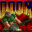

Mejor juega Doom mientras llega el internet.
ERR_INTERNET_DISCONNECTED • DOOM (1993) EASTER EGG
💡 Haz clic sobre el lienzo del juego para activar el apuntado con Mouse (Pointer Lock).
Arrastra y suelta tu archivo .WAD aquí
Compatible con DOOM.WAD, DOOM2.WAD, TNT.WAD, PLUTONIA.WAD, SIGIL.WAD o PWADs.
El internet ha vuelto. Hemos pausado tu partida para que no pierdas tu avance.